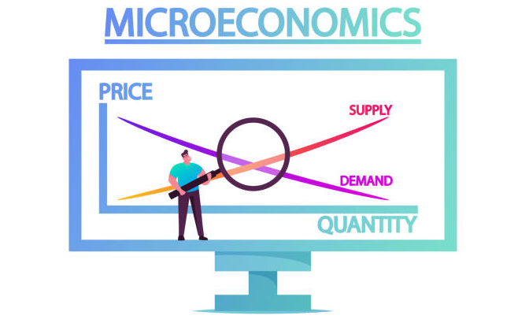

| A pozitív közgazdaságtan módszertana. A hipotézisek tesztelése. Az egyéni és a piaci kereslet vizsgálata, jellemzése. Az optimális inputfelhasználás általános feltételei. Az optimum feltételei az egyes piacszerkezetek esetén. A fogyasztói többlet. A termelés naturális és értékfolyamatainak modellezése és elemzése; a költségfogalom értelmezése; a kínálati függvény levezetése. A monopólium kialakulásának okai. Az állam mikrogazdasági szerepvállalása. A monopóliumok szabályozása. |  |

| Objektum Orientált Programozás | Adatbázis rendszerek | Mikroökonómia |